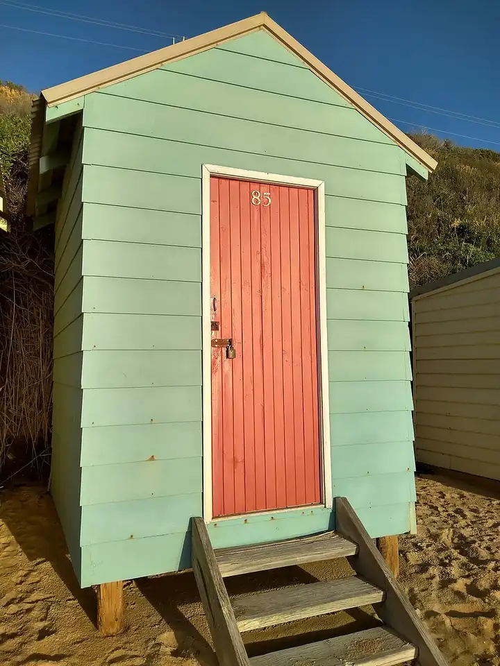

Fisherman's Beach, Mornington
Fisherman's Beach is a beach in Mornington, in the Mornington Peninsula Shire Council area, good for all ages. Williams Rd/Esplanade (bus) is a 1-minute walk away and the nearest public toilet is about 241 m away.


Quick facts
- Toilets
- 241 m away
- Public transport
- Williams Rd/Esplanade, bus (routes 781), 1 min walk
This page has basic info from the map: name, location and type. We have not checked the details yet. Know this place? Tell us.
Questions parents ask
- Where is Fisherman's Beach?
- Fisherman's Beach is in Mornington, Victoria.
- Is Fisherman's Beach free?
- Yes. It is a public beach, free to visit.
- Are there toilets at Fisherman's Beach?
- The nearest public toilet is about 241 m away.
- How do I get to Fisherman's Beach by public transport?
- The closest stop is Williams Rd/Esplanade (routes 781), a 1-minute walk.
Nearby places
- Mornington and District Memorial Park
Park · MorningtonFreeBus 2 min walk
- Playground on Alexander Avenue
Playground · MorningtonToilet nearbyFreeBus 7 min walk
- Playground at Nunns Reserve
Playground · MorningtonFreeBus 4 min walk
- Nunns Reserve
Park · MorningtonFreeBus 4 min walk
- Walter's Dining Hall
Cafe or restaurant · MorningtonBus 3 min walk
- Mornington Village Shopping Centre
Shopping centre · MorningtonBus 1 min walk
- Mothers Beach
Beach · MorningtonToilet nearbyFreeBus 4 min walk
- Mornington Skate Park
Skate, BMX or pump track · MorningtonToilet nearbyFreeBus 2 min walk